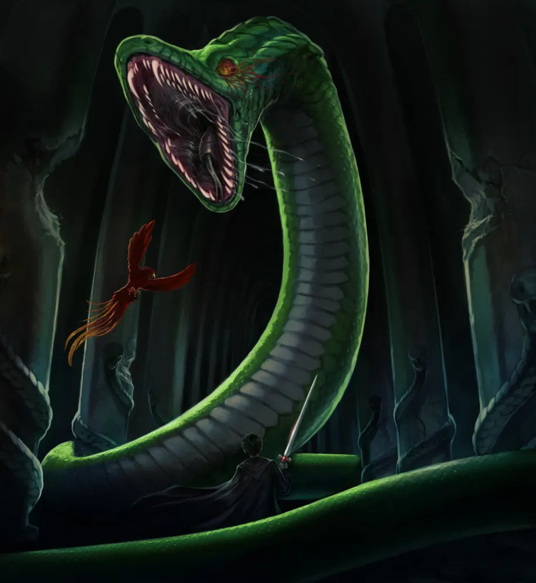
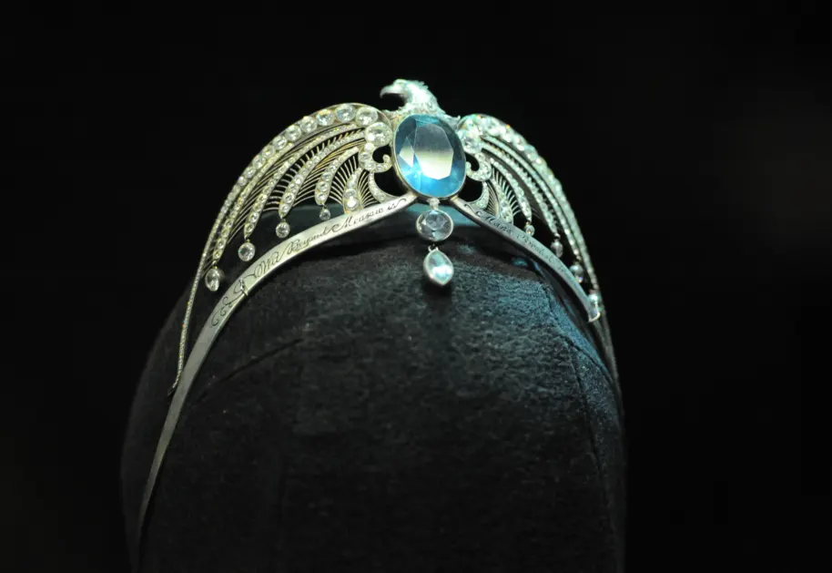
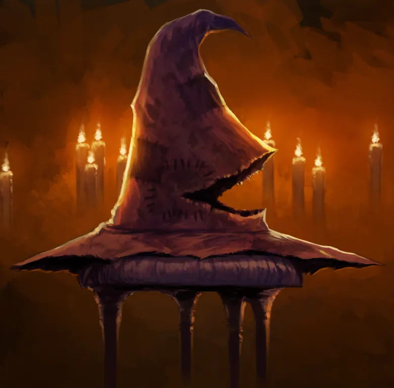

Hogwarts was founded by two wizards and two witches
At some point in the tenth century, four of the greatest witches and wizards that ever lived founded Hogwarts School of Witchcraft and Wizardry. Their names were Godric Gryffindor, Rowena Ravenclaw, Helga Hufflepuff and Salazar Slytherin. As The Sorting Hat told us, their reason for doing so was because they had the ‘selfsame yearning, to make the world’s best magic school’, and once they did, each created their own house to represent a personality and skill that they wanted to nurture. Gryffindor students embodied bravery and chivalry; Ravenclaw, intelligence and wit; Hufflepuff, loyalty and fair play; and Slytherin, the values of being sly and cunning.
Hogwarts castle was built in Scotland, away from Muggle eyes
The tenth century was a dangerous time for witches and wizards, who were being persecuted by Muggles hostile to magic. Therefore, Hogwarts was built somewhere in the Scottish Highlands, and concealed with numerous charms and spells to make it impossible for Muggles to trespass. For instead of an enormous school, any passing Muggle would only see ruins and signs warning them of danger.
The castle itself was huge and complex
Hogwarts has a long history of ancient magic, and Albus Dumbledore admitted that not even he knew all of its secrets. Indeed, much about the design and construction of Hogwarts remains a mystery. Did the founders implement the Anti-Disapparition Jinx? Where did the Room of Requirement come from? Why did they build a school next to a dark and dangerous forest?

Its name is very literal
It’s a popular wizarding theory that Rowena Ravenclaw came up with the name of Hogwarts after dreaming of a warty hog that led her to a cliff by a lake. It’s unknown, however, whether this is actually true.
The founders were friends, but fell out over what Hogwarts should be
Much like the Marauders, or Harry, Hermione and Ron, the founders of Hogwarts were originally friends. Yet that changed once it became clear that certain founders had a very different idea of what they wanted Hogwarts to be. That founder, of course, was Salazar Slytherin, who distrusted Muggle-born wizards, and believed that only ‘pure-blood’ students should be allowed to attend Hogwarts. The other founders disagreed – especially Godric Gryffindor, who was, up until then, Slytherin’s greatest friend. Their argument – possibly, it’s suggested, a duel – resulted in Slytherin leaving the school behind.
Salazar Slytherin left, but not before...
...he built the Chamber of Secrets. The story goes that the hidden chamber was kept secret from the other founders, and was sealed until Slytherin’s ‘true heir’ arrived at the school: a student who would be able to unseal the Chamber of Secrets and unleash the Basilisk inside, a huge snake that would purge the school of Muggle-born wizards. Now that is a grudge.

Tragedy also followed Rowena Ravenclaw
Rowena Ravenclaw was the greatest witch of her time; a figure famed for her intelligence and wit – and that was before she wore her enchanted diadem, which was said to enhance the wisdom of the wearer. Such a witch casts a long shadow, one her daughter Helena found it difficult to escape from. Envying her mother’s status and power, she betrayed her by stealing the diadem – believing it could make her powerful – and ran away from Hogwarts. The betrayal embarrassed Rowena, who told no one, including her fellow founders, that the diadem was missing.
On her death bed, she sent a young man to find Helena, so she could see her daughter for one last time. That young man, who had long been infatuated with Helena, tracked her down to a forest in Albania... but ending up killing her when she rejected his advances. His real name is unknown, but you’ll recognise him by his post-mortem moniker, the Bloody Baron.
Rowena Ravenclaw died soon after. Legend has it that the cause of death was a broken heart.

Helga Hufflepuff on the other hand...
Let’s go now to Helga Hufflepuff, who was apparently the founder responsible for giving house-elves jobs in the kitchens, giving them somewhere to work where they would be treated fairly, and not be abused. She was also very good at food-related charms, and her recipes are still used by Hogwarts for their feasts.
Godric Gryffindor’s legacy lives on today – through his hat
Godric Gryffindor favoured the virtues of courage and heroism, and has been described by J.K. Rowling as ‘the best duellist of his time’ — both with a wand, and a sword. Thus his legacy lives on with the Sword of Gryffindor, the relic that Harry Potter used to destroy Horcruxes. But he also endures through another object. You see, when the founders became older, they were faced with a problem: how would they ensure that students were sorted into the right House after they were gone? For up until that point, that decision was made by them and them alone. The solution? Godric’s hat. The founders decided that the best course of action was for Godric to take off his hat so that all four of them could enchant it to sort students long after their deaths. And lo, the Sorting Hat was born.
